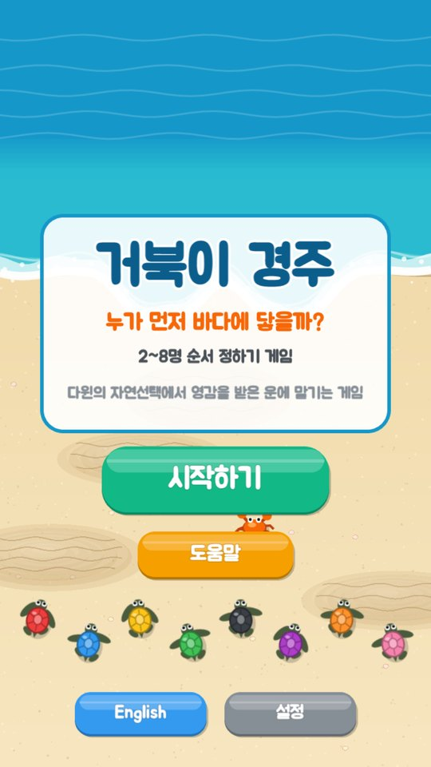
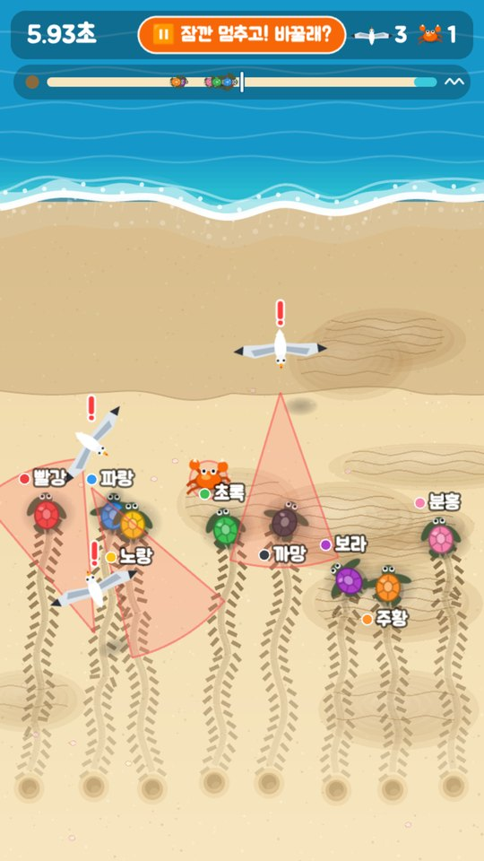
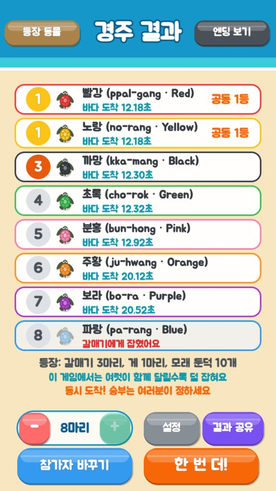
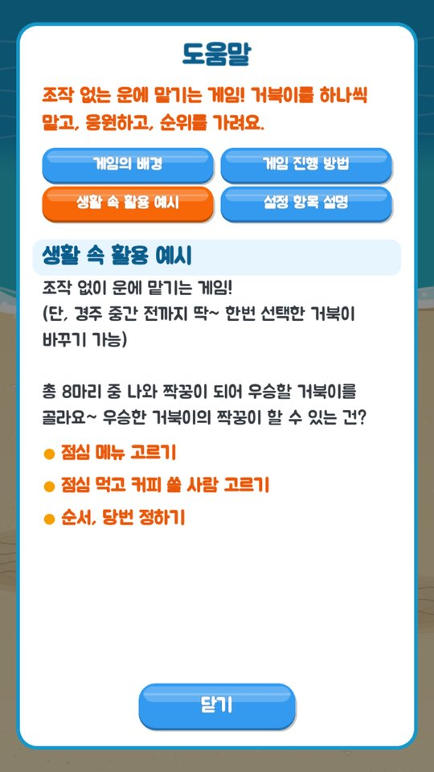

거북이 경주(영문 이름 Sandscram)는 2~8명이 휴대폰 한 대로 함께 하는 운에 맡기는 게임입니다. 한 둥지에서 함께 나온 바다거북 새끼들이 바다를 향해 같이 달리고, 갈매기와 게 같은 동물 천적, 깊이 밀려드는 파도가 순위를 바꿉니다. 조작은 없습니다. 참가자는 거북이를 한 마리씩 맡아 응원하고, 한 판에 한 번 '잠깐 멈추고! 바꿀래?' 버튼으로 경주를 잠시 멈출 수 있습니다. 한 판은 평균 15초 안팎이라 점심 메뉴 고르기, 당번 정하기, 발표 순서 정하기에 알맞습니다. 다윈의 자연선택에서 영감을 받았지만 결과는 운이 정하고, 출발 자리에 따른 유불리가 없도록 맞췄습니다. 인터넷 없이 실행되며 한국어와 영어를 지원합니다.
화면




게임 방법
- 시작하기를 누르고 거북이 수(2~8마리)를 골라요.
- 한 사람이 거북이 한 마리씩 맡아요.
- 카운트다운 뒤 한 둥지에서 함께 나온 거북이들이 바다로 같이 달려요. 조작은 없어요. 함께 응원해요!
- 한 판에 한 번, 선두가 모래사장 절반을 지나기 전까지 '잠깐 멈추고! 바꿀래?' 버튼으로 경주를 잠시 멈출 수 있어요.
- 바다에 먼저 닿을수록 높은 순위예요. 잡힌 거북이는 아래쪽이에요. 순위를 어디에 쓸지는 모인 사람들이 정해요.
이럴 때 써 보세요
- 점심 메뉴 고르기
- 점심 먹고 커피 쏠 사람 고르기
- 순서, 당번 정하기
자주 묻는 질문
- 거북이 경주는 어떤 게임인가요?
- 2~8명이 휴대폰 한 대로 함께 하는 운에 맡기는 게임입니다. 한 둥지에서 함께 나온 바다거북 새끼들이 바다까지 같이 달리고, 바다에 먼저 닿은 순서대로 순위가 정해집니다. 갈매기, 게, 깊이 밀려드는 파도가 순위를 바꿉니다.
- 몇 명이 할 수 있나요?
- 2명부터 8명까지입니다. 거북이 수를 2~8마리로 고르고, 한 사람이 거북이 한 마리씩 맡습니다. 휴대폰은 한 대만 있으면 됩니다.
- 조작해야 하나요?
- 아니요. 조작은 없고 응원만 합니다. 한 판에 한 번, 선두가 모래사장 절반을 지나기 전까지 '잠깐 멈추고! 바꿀래?' 버튼으로 경주를 잠시 멈출 수 있습니다.
- 한 판은 얼마나 걸리나요?
- 경주는 평균 15초 안팎입니다. 출발 전 카운트다운 3초가 따로 있습니다.
- 실력이나 거북이 선택이 결과에 영향을 주나요?
- 거의 주지 않습니다. 거북이별 속도 차이는 ±4%이고 속도와 생존은 거의 관계가 없습니다. 출발 자리별 1등 비율은 4,000판 시험에서 기대값과 2.5%포인트 안으로 같았습니다. '여럿이 함께 달리면 덜 잡힌다'는 이 게임의 규칙이고, 실제 바다거북 생태를 그대로 주장하는 말은 아닙니다.
- 무엇을 정할 때 쓰면 좋나요?
- 점심 메뉴 고르기, 점심 먹고 커피 쏠 사람 고르기, 순서나 당번 정할 때 씁니다.
- 동점이면 어떻게 되나요?
- 화면에 보이는 시간(0.01초 단위)이 같으면 공동 순위로 표시합니다. 승부는 참가자들이 한 판 더 하거나 가위바위보로 정합니다.
- 인터넷이 필요한가요?
- 아니요. 게임은 인터넷 없이 실행됩니다. 결과 그림을 메신저로 공유할 때만 그 앱의 연결을 씁니다.
- 다윈의 자연선택과 어떤 관계가 있나요?
- 자연선택에서 영감을 받은 운에 맡기는 게임입니다. 실제 새끼들은 한 둥지에서 무리로 나와 바다를 향해 달려요. 해변에서는 갈매기·게 같은 동물 천적을 만날 수 있어요. 게임은 이를 간단히 표현했고, 결과는 운이 정합니다. 실제 새끼들은 대부분 밤에 나오지만 게임은 보기 쉽게 낮으로 그렸어요.
- 어떤 동물이 나오나요?
- 올리브각시바다거북(Lepidochelys olivacea), 유령게(Ocypode 속), 갈매기류(Laridae)입니다. 실제 바닷가 생태에서 영감을 받아 간단하게 표현했습니다. 운이 좋으면 수십 년을 살아요.
- 엔딩은 무엇을 말하나요?
- 결과 화면 뒤에 짧은 엔딩이 이어질 수 있어요. 해변에서 함께 달려 살아남은 뒤에도 바다에는 폐그물·플라스틱 같은 위험이 있을 수 있다는 이야기예요. 갈매기·게 같은 동물 천적과 쓰레기 위험을 구분하고, 사람이나 아이를 천적이라고 부르지 않아요. 주제는 '해변에선 함께 달려 살아남았어요. 이제 바다는 우리가 함께 지켜요.'예요. 많은 바다 동물이 플라스틱을 먹이로 착각해 삼키기도 해요.
- 어떤 언어를 지원하나요?
- 화면은 한국어와 영어를 지원합니다. 거북이 기본 이름은 등껍질 색 이름이고, 기기 언어에 맞춰 17개 언어로 표시됩니다.
- 개인정보를 수집하나요?
- 현재 버전은 개인정보를 수집하지 않습니다. 소리 크기 같은 설정만 휴대폰 안에 저장합니다.
등장 동물
올리브각시바다거북(Lepidochelys olivacea), 유령게(Ocypode 속), 갈매기류(Laridae). 실제 바닷가 생태에서 영감을 받아 간단히 표현했습니다.